← Índice de los 69 tutes de IDA
Tute 13 · Plugins de IDA
se conecta con: Herramientas · IDA · Instrucciones · Flujo · Debugger · Números
INTRODUCCIÓN AL REVERSING CON IDA PRO DESDE CERO PARTE 13
PLUGINS INTERESANTES
NOTA: Algunos de estos plugin han sido actualizados y no funcionan ya bien en la versión 6.8. Sino los pueden instalar, al menos lean como se usan para si alguna vez usan la versión 7.x saben que existen y de que se tratan. Tampoco es que no se pueda usar IDA sin ellos, solo traen un poco más de comodidad en alguna que otra tarea, pero nada que no se pueda hacer sin tenerlos.
IPYIDA
Antes de continuar con ejercicios profundizando el uso del IDA haremos esta parte 13 que será relajada, para conocer un plugin que es bastante cómodo y que nos da la posibilidad de manejarnos mejor con Python, que la barrita que trae incluida y fue sugerida por Shaddy al cual le agradezco pues es muy interesante.
El plugin en cuestión se llama IpyIDA y se instala solo copiando y pegando esta línea en la barra de Python.
import urllib2; exec urllib2.urlopen('https://github.com/eset/ipyida/raw/stable/install_from_ida.py').read()
Eso es un comando de una sola línea que se puede copiar y pegar desde aquí, por si se corrompe algo el mismo se encuentra en este link.
https://github.com/eset/ipyida
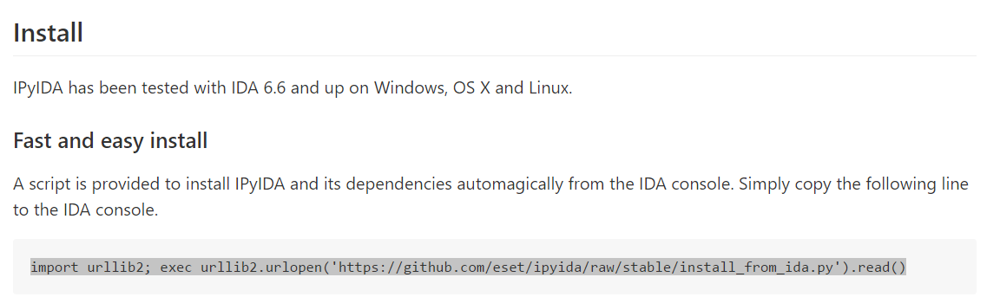
Eso hará que se instale automáticamente en un par de minutos estará listo no le den importancia a mensajes de advertencia de versión de Python funcionara igualmente. (Al final del capítulo recopilé algún que otro problema que tuve al instalarlo en otras máquinas, si alguien tiene algún problema ver allí)
A mi luego de instalarse y arrancarse desde EDIT-PLUGINS-IpyIDA me apareció en una ventanita inferior con poco lugar para escribir, pero arrastrándola puse acomodarla como pestaña lo cual da más lugar y comodidad.
Es bueno aclarar que aunque tenemos Python en nuestra maquina instalado por IDA, si queremos correr un script de Python puro muchas veces debemos hacerlo fuera de IDA, tanto la barra como la posibilidad de correr scripts de Python dentro de IDA son normalmente para scripts para usar las funciones internas de IDA, o sea IDAPYTHON, lo cual no funciona fuera de IDA.
Igual en el Python incluido en el IDA muchas cosas funcionan igual que en el de fuera, pero alguna que otra no, y es bueno aclarar que eso puede pasar.
O sea el Python interno de IDA se asemeja al OLLYDBG script, para poder scriptear el funcionamiento del IDA, más que para scripts puros de Python que se ejecutan en forma más compatible fuera de IDA.
IPYTHON
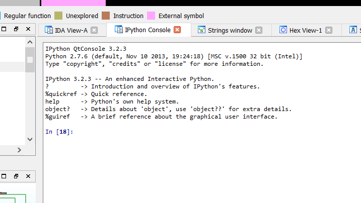
Obviamente es mucho más poderosa que la barrita de Python si apretamos la tecla ? para ver la referencia rápida.
IPython -- An enhanced Interactive Python
=========================================
IPython offers a combination of convenient shell features, special commands
and a history mechanism for both input (command history) and output (results
caching, similar to Mathematica). It is intended to be a fully compatible
replacement for the standard Python interpreter, while offering vastly
improved functionality and flexibility.
At your system command line, type 'ipython -h' to see the command line
options available. This document only describes interactive features.
MAIN FEATURES
-------------
* Access to the standard Python help. As of Python 2.1, a help system is
available with access to object docstrings and the Python manuals. Simply
type 'help' (no quotes) to access it.
* Magic commands: type %magic for information on the magic subsystem.
* System command aliases, via the %alias command or the configuration file(s).
* Dynamic object information:
Typing ?word or word? prints detailed information about an object. If
certain strings in the object are too long (docstrings, code, etc.) they get
snipped in the center for brevity.
Typing ??word or word?? gives access to the full information without
snipping long strings. Long strings are sent to the screen through the less
pager if longer than the screen, printed otherwise.
The ?/?? system gives access to the full source code for any object (if
available), shows function prototypes and other useful information.
If you just want to see an object's docstring, type '%pdoc object' (without
quotes, and without % if you have automagic on).
* Completion in the local namespace, by typing TAB at the prompt.
At any time, hitting tab will complete any available python commands or
variable names, and show you a list of the possible completions if there's
no unambiguous one. It will also complete filenames in the current directory.
This feature requires the readline and rlcomplete modules, so it won't work
if your Python lacks readline support (such as under Windows).
* Search previous command history in two ways (also requires readline):
- Start typing, and then use Ctrl-p (previous,up) and Ctrl-n (next,down) to
search through only the history items that match what you've typed so
far. If you use Ctrl-p/Ctrl-n at a blank prompt, they just behave like
normal arrow keys.
- Hit Ctrl-r: opens a search prompt. Begin typing and the system searches
your history for lines that match what you've typed so far, completing as
much as it can.
- %hist: search history by index (this does *not* require readline).
* Persistent command history across sessions.
* Logging of input with the ability to save and restore a working session.
* System escape with !. Typing !ls will run 'ls' in the current directory.
* The reload command does a 'deep' reload of a module: changes made to the
module since you imported will actually be available without having to exit.
* Verbose and colored exception traceback printouts. See the magic xmode and
xcolor functions for details (just type %magic).
* Input caching system:
IPython offers numbered prompts (In/Out) with input and output caching. All
input is saved and can be retrieved as variables (besides the usual arrow
key recall).
The following GLOBAL variables always exist (so don't overwrite them!):
_i: stores previous input.
_ii: next previous.
_iii: next-next previous.
_ih : a list of all input _ih[n] is the input from line n.
Additionally, global variables named _i<n> are dynamically created (<n>
being the prompt counter), such that _i<n> == _ih[<n>]
For example, what you typed at prompt 14 is available as _i14 and _ih[14].
You can create macros which contain multiple input lines from this history,
for later re-execution, with the %macro function.
The history function %hist allows you to see any part of your input history
by printing a range of the _i variables. Note that inputs which contain
magic functions (%) appear in the history with a prepended comment. This is
because they aren't really valid Python code, so you can't exec them.
* Output caching system:
For output that is returned from actions, a system similar to the input
cache exists but using _ instead of _i. Only actions that produce a result
(NOT assignments, for example) are cached. If you are familiar with
Mathematica, IPython's _ variables behave exactly like Mathematica's %
variables.
The following GLOBAL variables always exist (so don't overwrite them!):
_ (one underscore): previous output.
__ (two underscores): next previous.
___ (three underscores): next-next previous.
Global variables named _<n> are dynamically created (<n> being the prompt
counter), such that the result of output <n> is always available as _<n>.
Finally, a global dictionary named _oh exists with entries for all lines
which generated output.
* Directory history:
Your history of visited directories is kept in the global list _dh, and the
magic %cd command can be used to go to any entry in that list.
* Auto-parentheses and auto-quotes (adapted from Nathan Gray's LazyPython)
1. Auto-parentheses
Callable objects (i.e. functions, methods, etc) can be invoked like
this (notice the commas between the arguments)::
In [1]: callable_ob arg1, arg2, arg3
and the input will be translated to this::
callable_ob(arg1, arg2, arg3)
This feature is off by default (in rare cases it can produce
undesirable side-effects), but you can activate it at the command-line
by starting IPython with `--autocall 1`, set it permanently in your
configuration file, or turn on at runtime with `%autocall 1`.
You can force auto-parentheses by using '/' as the first character
of a line. For example::
In [1]: /globals # becomes 'globals()'
Note that the '/' MUST be the first character on the line! This
won't work::
In [2]: print /globals # syntax error
In most cases the automatic algorithm should work, so you should
rarely need to explicitly invoke /. One notable exception is if you
are trying to call a function with a list of tuples as arguments (the
parenthesis will confuse IPython)::
In [1]: zip (1,2,3),(4,5,6) # won't work
but this will work::
In [2]: /zip (1,2,3),(4,5,6)
------> zip ((1,2,3),(4,5,6))
Out[2]= [(1, 4), (2, 5), (3, 6)]
IPython tells you that it has altered your command line by
displaying the new command line preceded by -->. e.g.::
In [18]: callable list
-------> callable (list)
2. Auto-Quoting
You can force auto-quoting of a function's arguments by using ',' as
the first character of a line. For example::
In [1]: ,my_function /home/me # becomes my_function("/home/me")
If you use ';' instead, the whole argument is quoted as a single
string (while ',' splits on whitespace)::
In [2]: ,my_function a b c # becomes my_function("a","b","c")
In [3]: ;my_function a b c # becomes my_function("a b c")
Note that the ',' MUST be the first character on the line! This
won't work::
In [4]: x = ,my_function /home/me # syntax error
________________________________________________________________________
Bueno obviamente tiene muchas posibilidades, quito lo que mostro recientemente con ESC.
La opción de autocompletar con la tecla TAB que no tiene la barra de Python incluida, es de agradecerse.
Vemos que si tipeo imp y TAB me autocompleta import y si le soy TAB de nuevo.
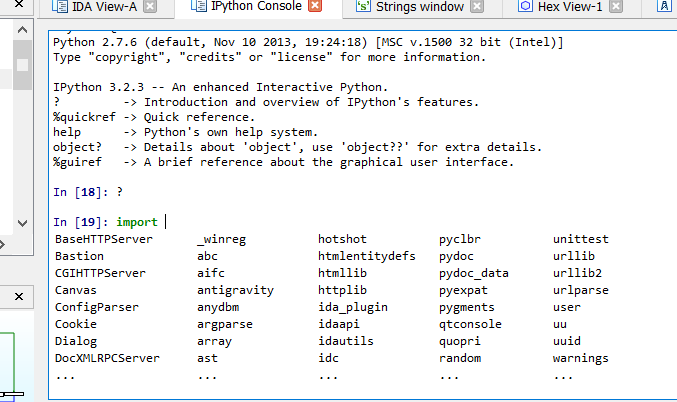
Me salen las posibilidades de importar que puedo navegar para arriba y abajo con las flechas y quitar con ESC.
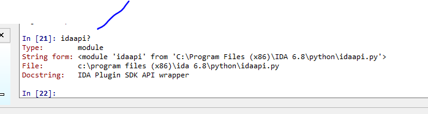
Al poner el signo de pregunta una vez, me da una rápida información y si lo pongo dos veces me muestra el código tarda un ratito más esto.
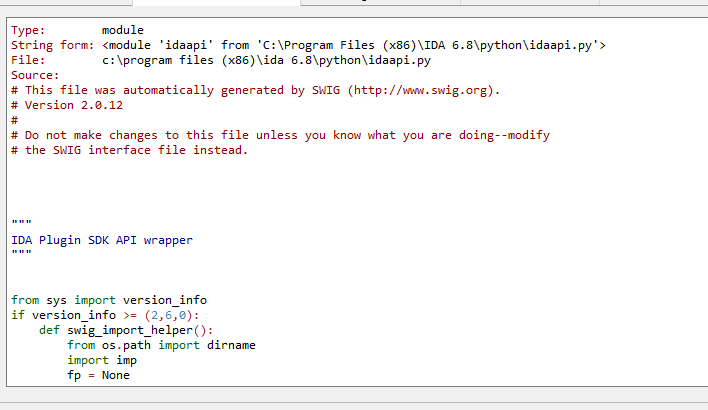
Cuando termino con ESC vuelvo donde estaba.
También con la flecha para arriba y abajo puedo ir a los comandos anteriores que use.
%hist muestra los comandos históricos que use.
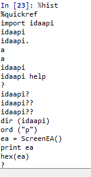
%edit abre un notepad
Y %edit x-y abrirá un notepad con las líneas en ese rango.
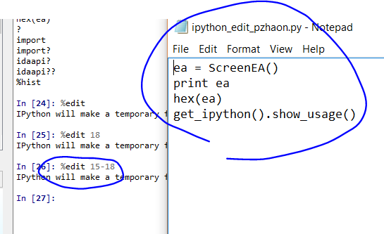
%history -n le agrega los números de línea para saber bien si necesitamos abrir un rango para armar un script con edit.
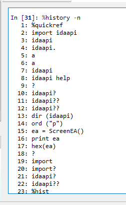
Obviamente IPython es bastante potente y tiene miles de comandos los cuales pueden hallarse completos aquí.
http://ipython.org/ipython-doc/3/index.html
Haremos un par de ejemplitos simples con las api de incluidas de IDApython usando este nuevo plugin.
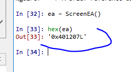
La dirección actual del cursor
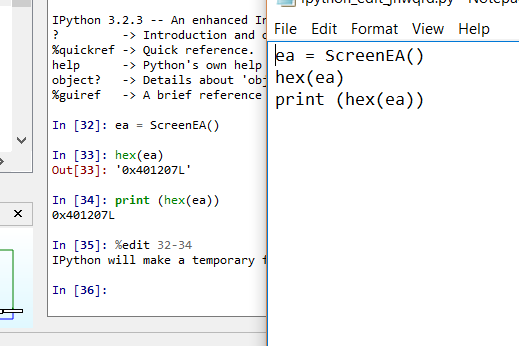
Si hago un script y lo guardo.
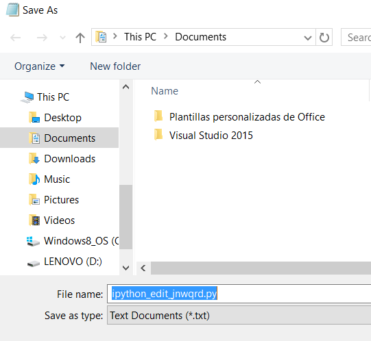
Si ejecutamos el script desde el menú de IDA, FILE-SCRIPT FILE funcionara.
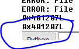
También el comando de idc.GetDisasm(ea) nos dará la instrucción en donde está ubicado el cursor.
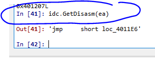
Si cambio el cursor a otra instrucción deberé hallar de nuevo ea
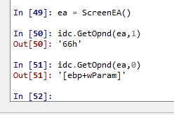
Con idc.GetOpnd puedo obtener el primer o segundo operando de la instrucción.
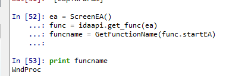
El nombre de la función actual.
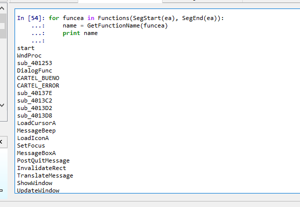
El nombre de todas las funciones del segmento.
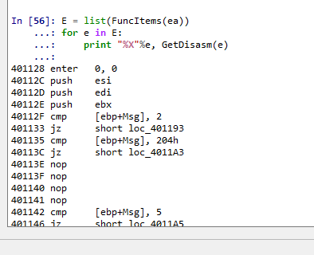
Las instrucciones de la función.
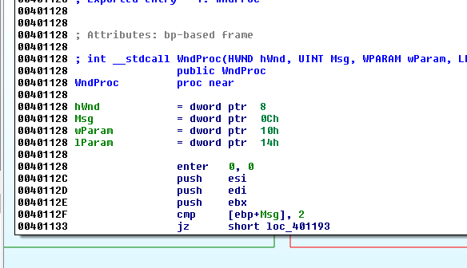
Las referencias a la función si ponemos el mismo en el inicio de una función que tenga referencias y volvemos a hallar el ea.
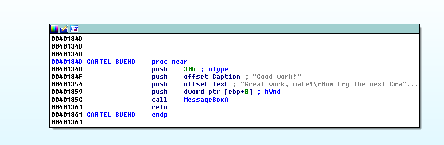
Veo la referencia.
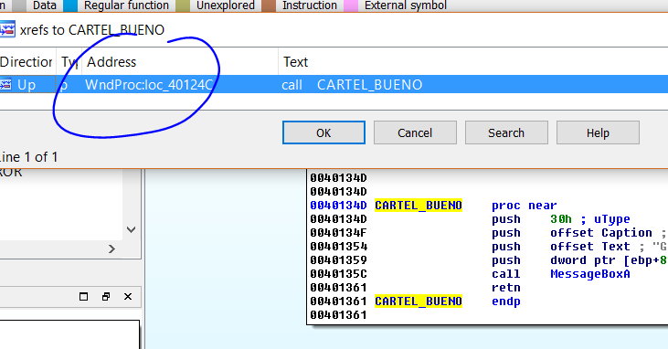
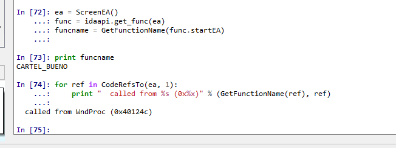
El plugin nos da mucha comodidad y IDApython tiene miles de instrucciones que sirven para poner breakpoints, loggear, arrancar el debugger etc.
Bueno una parte de descanso nos vemos en la 14
Ricardo Narvaja
PROBLEMAS AL INSTALAR
Suele haber problemas de instalación si tenemos instalado previamente pip en Python, eso se puede verificar fácilmente in IDA tipeando antes de instalar en la barra de Python.
import pip
Si no devuelve error es que ya tienen instalado pip y fallara al instalar lo que deben hacer es abrir una consola de Windows y tipear.
python -m pip uninstall pip setuptools
y reiniciar IDA con eso podrán instalar el plugin correctamente.
Si al reiniciar no arranca nuevamente, es que deben bajarse de la página y copiar a mano ipyida_plugin_stub.py en la carpeta plugins de IDA.
https://github.com/eset/ipyida
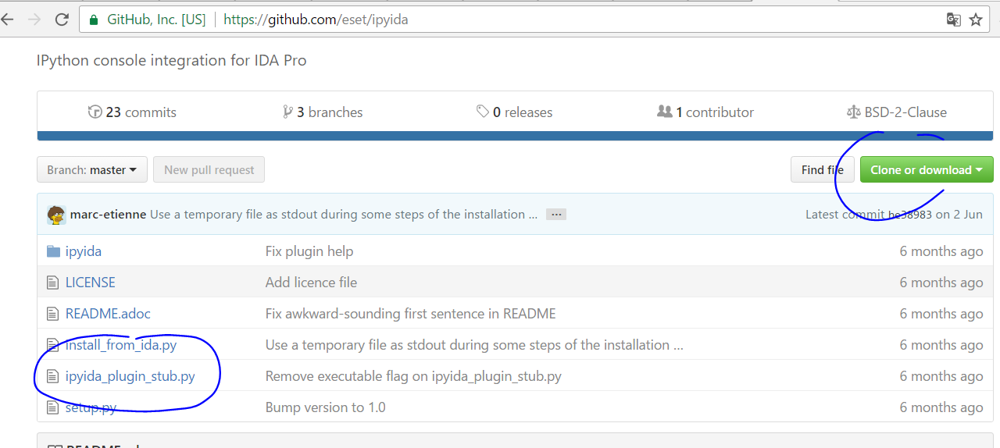
Ahora si hasta la próxima.
Ricardo Narvaja